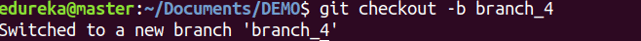
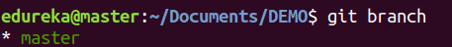
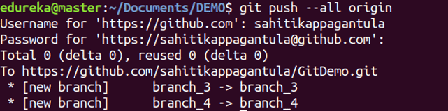

Homework #1
"VCS (Git, Github, gh-pages)"
written by Yaroslava Drobilko
Git Commands - base
git config
Usage: git config –global user.name “[name]” Usage:
git config –global user.email “[email address]” This command sets the author name and email address respectively to be used with your commits.

git init
Usage: git init [repository name] This command is used to start a new repository.

git status
Usage: git status This command lists all the files that have to be committed.

git add
Usage: git add [file] This command adds a file to the staging area.

Usage:
git add * This command adds one or more to the staging area.

git commit
Usage: git commit -m “[ Type in the commit message]” This command records or snapshots the file permanently in the version history.

Usage:
git commit -a This command commits any files you’ve added with the git add command and also commits any files you’ve changed since then.

git log
Usage: git log This command is used to list the version history for the current branch.

git checkout
Usage: git checkout [branch name] This command is used to switch from one branch to another.

Usage:
git checkout -b [branch name] This command creates a new branch and also switches to it.

git branch
Usage:git branch This command lists all the local branches in the current repository.

Usage:
git branch [branch name] This command creates a new branch.

Usage:
git branch -d [branch name] This command deletes the feature branch.

git push
Usage:git push [variable name] master This command sends the committed changes of master branch to your remote repository.

Usage:
git push [variable name] [branch] This command sends the branch commits to your remote repository.

Usage:
git push –all [variable name] This command pushes all branches to your remote repository.

git pull
Usage:git pull [Repository Link] This command fetches and merges changes on the remote server to your working directory.

git merge
Usage:git merge [branch name] This command merges the specified branch’s history into the current branch.

git clone
Usage:git clone [url] This command is used to obtain a repository from an existing URL.

Commands - Advanced
-
git revert is used to record some new commits to reverse the
effect of some earlier commits (often only a faulty one).
git-revert - Revert some existing commits -
git cherry-pick It allows you to pick up one commit from
another branch and insert it into the current one. As an option, the
commit ID is transmitted in another branch.
git-cherry-pick - Apply the changes introduced by some existing commits -
git reset will take your branch back to a certain point in
the commit history, but there are 3 different levels to this: soft,
hard, mixed.
How and when to use git reset -
git rebase combines changes made in one branch with the
other branch, but it rewrites history, because it transfers
completed work.
git-rebase - Reapply commits on top of another base tip -
git stash can help you to (temporarily but safely) store your
uncommitted local changes - and leave you with a clean working copy.
How to save your changes temporarily
How to use a .gitignore file and what is it?
We use a .gitignore file if there are some files that we never want commit. It lets Git know that it should ignore certain files and not track them.
Here's how it works. A .gitignore file is a plain text file where each line contains a pattern for files/directories to ignore. Generally, this is placed in the root folder of the repository. However, you can put it in any folder in the repository and you can also have multiple .gitignore files. You can also create a global .gitignore file and any entries in that file will be ignored in all of your Git repositories.
Wildcard
- * - matches 0 or more characters (except the /). So, for example, *.log matches any file ending with the .log extension.
- ! - as a prefix to negate a file that would be ignored, for example, "!example.log"
- *~ - matches any file ending with ~, such as "index.html~"